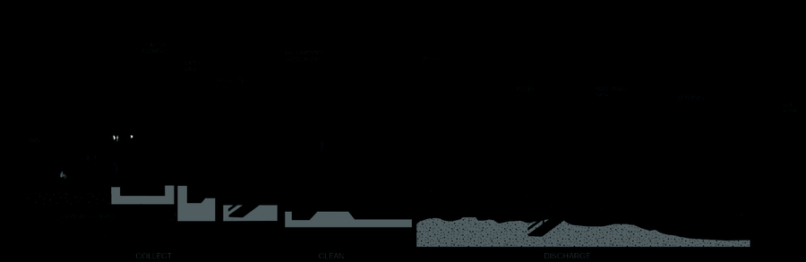

Wet City · Wildness
The Fall 2022 Berlin studio examines the city’s relationship to water through the landscapes and infrastructures that have formed the greater region — viewing these landscapes through two lenses simultaneously, as infrastructures supporting urban settlement and as a wild eco-hydrological network that can support multi-species autonomy. The urban landscape of Berlin presents a compelling space for investigating the dynamics of hydrology and how the design of landscape infrastructure may play a role in the creation of diverse habitats. The initial focus lies within the center of Berlin, in particular the loop of the Spree and Landwehr Kanal, expanding outward to the greater Berlin region and the Spree River watershed.“The research agenda is to use the concept of wildness as an instigator to speculate about the possible multiplicities of hydrologic systems within contemporary Berlin without reduction to a single valuation.”

About the studio
ALAR 8010 Berlin Research Studio is a graduate research studio in the Department of Landscape Architecture. The Berlin Wet City / Cultivated Wildness iteration (Fall 2022) examined Berlin’s relationship to water through the landscapes and infrastructures of the greater region, using the concept of wildness — interpreted broadly — to guide speculation on material assemblies, programs, and the planning of public water infrastructure.
Faculty: Bradley Cantrell (Chair and Professor of Landscape Architecture) and Michael Lee (Reuben M. Rainey Professor in Landscape History). Meeting: Tuesday and Thursday, 12:30–17:00.
This page documents the Fall 2022 Berlin Wet City / Cultivated Wildness iteration of the Berlin Research Studio series.